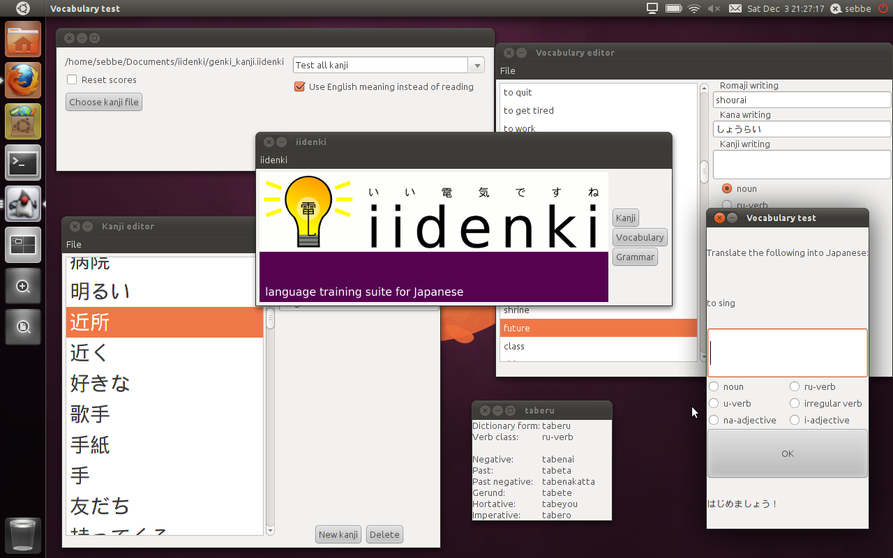

iidenki is a versatile software tool for helping you learn the Japanese language in a way you feel comfortable with. At the moment, the application suite has support for entering and training vocabulary, kanji and kanji compounds and a grammar reference part.
{kind=link}

click image to magnify
iidenki is free and open source software! to access the source code, please go to the iidenki project pages on GitHub. iidenki is released under the GPLv3.
iidenki is a hobby project developed by a computer science and software engineering student with an interest in Japanese. Comments and suggestions are always highly welcome. Please go to the about page for contact information.
Some highlights:
- Easy to use interface
- Memorize the correct grammatical word class with built in word class testing in the vocabulary tester
- Verb conjugator helps you learn verb conjugation by conjugating any verb you wish
- Intelligent test modes keep track of which words or kanji compounds you find difficult
- Kanji practice sheet printouts with multiple options
iidenki runs on Linux, Mac OS X and Windows. Java is required.